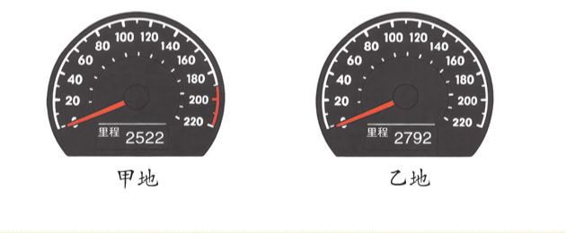
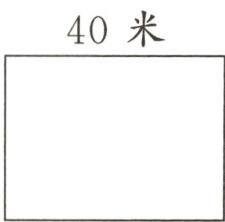

A1
速度、时间和路程
举例说明什么是速度、时间和路程。
怎么完成：口述
需要时再打开帮助
- 先说清是谁在运动，再说用了多久、走了多远。
- 最后检查速度的单位里，是否说清每分钟、每秒或每小时走多少。
看完后收起帮助，回到原题，用自己的话继续。
你已经能独立解决不少行程问题。今天继续把每个数放回正确的位置，再研究数量变化时结果怎样跟着变。
今天计划有 12 个定位题号：A1—A4、B1—B6 共 10 道向前学，R1、R2 各补一座小桥。B6、R1 是 2 道专题手写；A3可使用普通草稿。完成A4或B4后都可以休息，累了就在当前题号停，下次接着做。
先看自己在整册书的哪里，再开始今天的题。
举例说明什么是速度、时间和路程。
怎么完成：口述
看完后收起帮助，回到原题，用自己的话继续。
小军和小东步行上学，小军的速度是72米/分，小东5分钟走了400米，谁走得更快？
怎么完成：口述算式和理由
看完后收起帮助，回到原题，用自己的话继续。
甲、乙两个城市之间相距305千米。高阿姨开车从甲城到乙城，行驶了3小时，离乙城还有20千米。高阿姨开车的平均速度是多少？
怎么完成：用普通草稿保留算式、单位和答句
看完后收起帮助，回到原题，用自己的话继续。
只订正一次。能解释两个读数的差表示什么，并做完两问，就继续 R2。

早上8:30，李叔叔开车从甲地出发，11:30到达乙地。出发时里程表显示2522，到达时显示2792。李叔叔从甲地开往乙地的速度是多少？下午1:30，他以同样速度从乙地出发，3:30到达丙地，乙、丙两地相距多少千米？
怎么完成：核心手写：只订正一次，保留两问算式和单位
看完后收起帮助，回到原题，用自己的话继续。
王叔叔坚持每天跑步20分钟，他平均每分钟能跑300米。王叔叔一周能跑多少千米？
怎么完成：口述完整算式、单位和答案
看完后收起帮助，回到原题，用自己的话继续。
从这里开始研究：一个量变了，结果会怎样跟着变。先按自己的方法做。
学校开展节约用水活动，前3个月共节约用水435吨。照这样计算，学校一年能节约用水多少吨？
怎么完成：先口述关系，再计算并带单位回答
看完后收起帮助，回到原题，用自己的话继续。
一个长方形莲花池的面积是96平方米，改造后长不变，宽由原来的8米减少到4米。改造后的莲花池的面积是多少平方米？
怎么完成：说出你的想法并解答
看完后收起帮助，回到原题，用自己的话继续。
两个乘数的积是45，两个乘数都扩大10倍后，积是（ ）。
A. 45 B. 450 C. 4500
怎么完成：选择并说出理由
看完后收起帮助，回到原题，用自己的话继续。
根据28×25＝700，把下面的算式填写完整。
（1）280×25＝（ ）
（2）14×75＝（ ）
（3）14×（ ）＝700
（4）（ ）×250＝7000
怎么完成：逐小问填写；每小问说说你是怎么算的
看完后收起帮助，回到原题，用自己的话继续。
这题已经给出两种方法。任选一种，用自己的话解释清楚就可以。

机场的候机区原来是一个面积是1200平方米的长方形。为满足旅客增长的需求，机场对候机区进行扩建，长增加到80米，宽不变。聪聪和明明用不同的方法算出了扩建后候机区的面积，你喜欢谁的方法？请解释一下他的思考过程。
聪聪：1200÷40＝30（米），30×80＝2400（平方米）。
明明：80÷40＝2，1200×2＝2400（平方米）。
怎么完成：看原图，选择一种方法，用自己的话讲清每一步算的是谁
这是今天积变化关系的最后一道应用。先独立完成，再决定要不要打开帮助。
游乐场准备扩建一块长方形草坪，这块草坪原来的面积是540平方米，宽是9米。如果长不变，宽增加27米，草坪的面积增加多少平方米？
怎么完成：核心手写：保留自己的算式、单位和答句
看完后收起帮助，回到原题，用自己的话继续。
只订正一次。让原题要求管住选择，完成后今天就结束。
请从下面信息中选择一组，提出一个已知时间和速度、求路程的问题，并解答。
①贝贝步行的速度是54米/分。
②佳佳从家到书店用了12分钟。
③贝贝13:30从家出发，13:50到电影院。
④佳佳家距离书店960米。
（1）选择的信息：________。（填序号）
（2）提出的问题：________？
（3）解答。
怎么完成：口述选择、问题和解答
看完后收起帮助，回到原题，用自己的话继续。